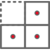

产品亮点
PRODUCT HIGHLIGHTS

无扰部署
- 镜像部署；
- 无扰接入系统；
- 不改变网络拓扑。
工业漏洞库
- 包含1000余种工业漏洞;
- 涵盖主流厂商的工业漏洞;
- 精细分类工业漏洞，精确审计工业设备和主机漏洞。

丰富的报表与告警方式
- 定制报表内容，定制报表生成周期，定制报表 导出格式；
- 定制告警内容；
- 定制告警聚合，减少告警状态。
机器学习建模
- 建立未知协议基准模型，无限接近复现 原始协议通信，解决复杂工业通讯环境的 检测难题；
- 建立工业控制网络数据安全基线，警示 未知漏洞与威胁。
多层次深度检测
- 展现网络地址，MAC地址，传输端口的内容；
- 基于应用层的流量检测，透明化工业控制网 络通讯数据，在人机交互界面中展示通讯的数据。

多协议深度解析
- 深度解析MODBUS TCP、MMS、IEC104、S7、DNP3、xSV、OPCDA、GOOSE、PROFINETIO等多种工业协议
- 支持FTP、TELNET、SMTP、POP3、视频、IM、P2P等传统IT协议的深度解析；
- 支持第三方协议定义。